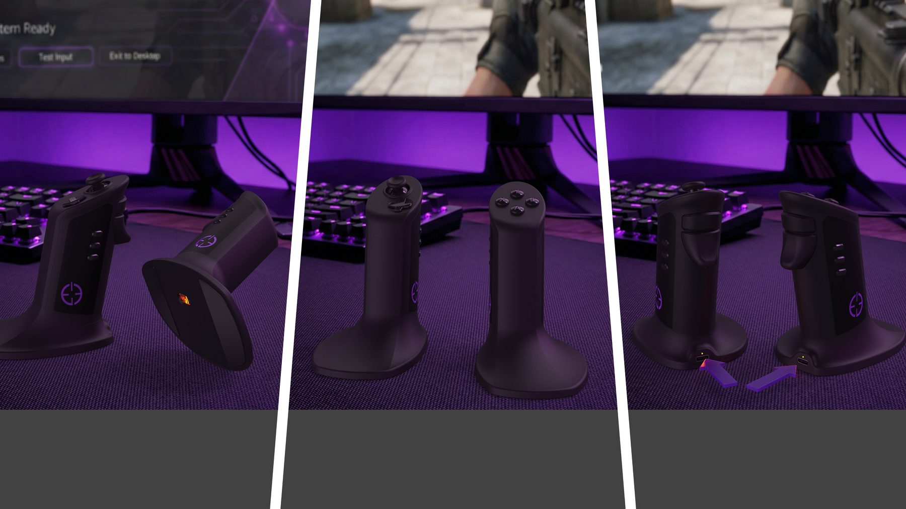
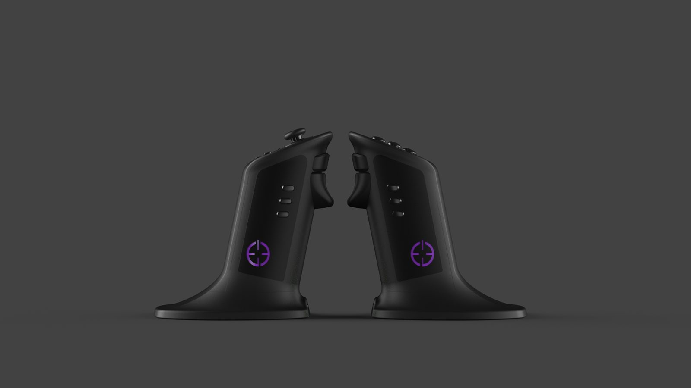
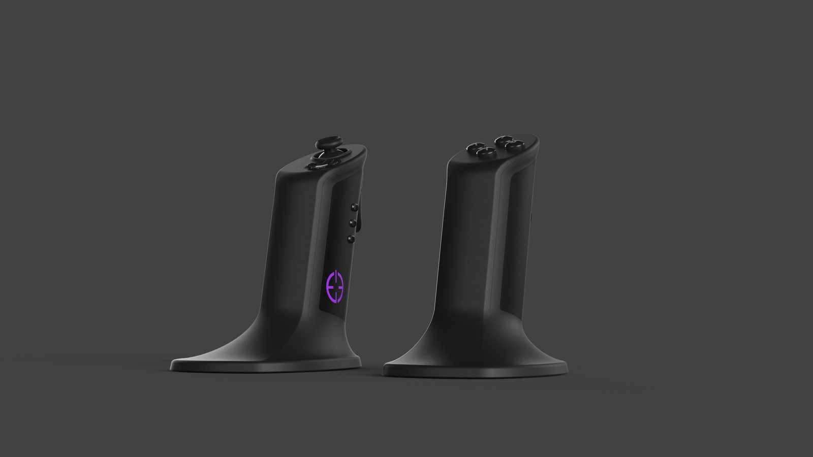
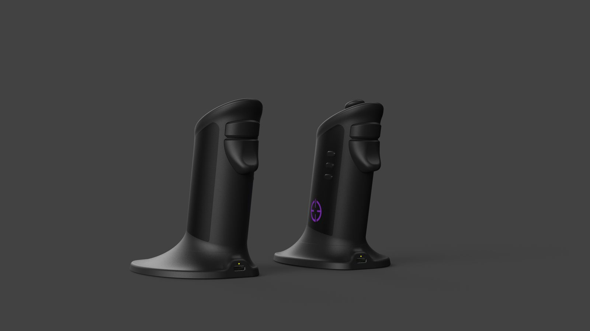
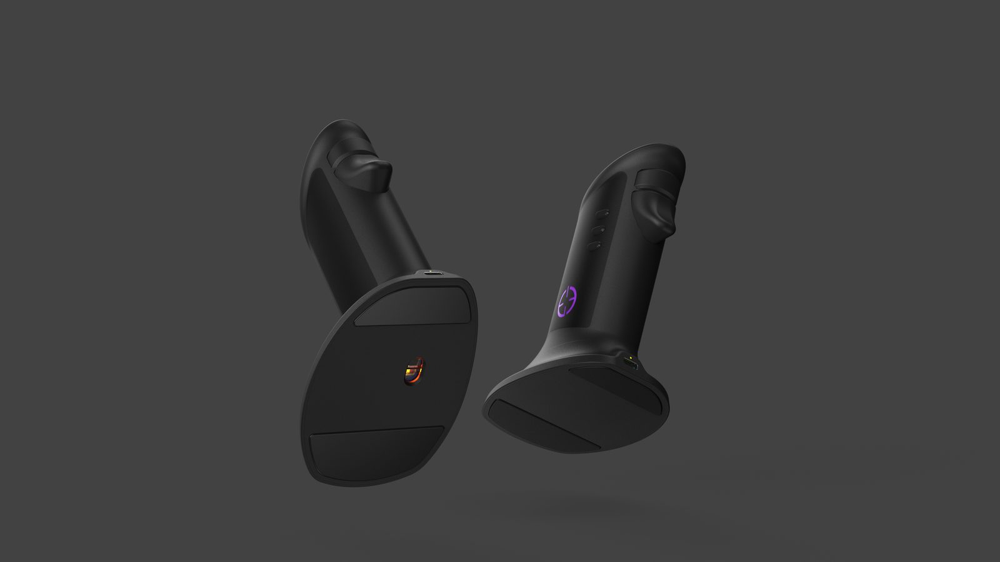
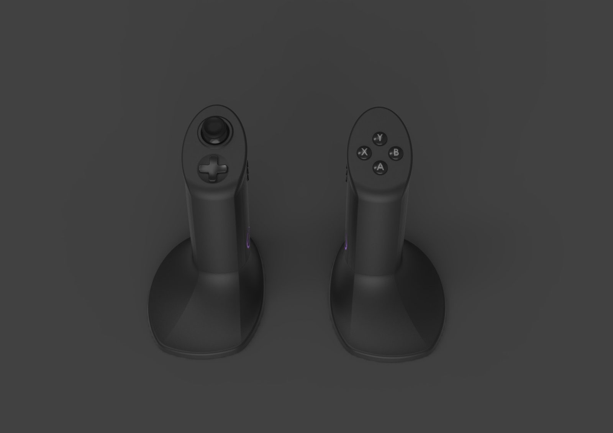
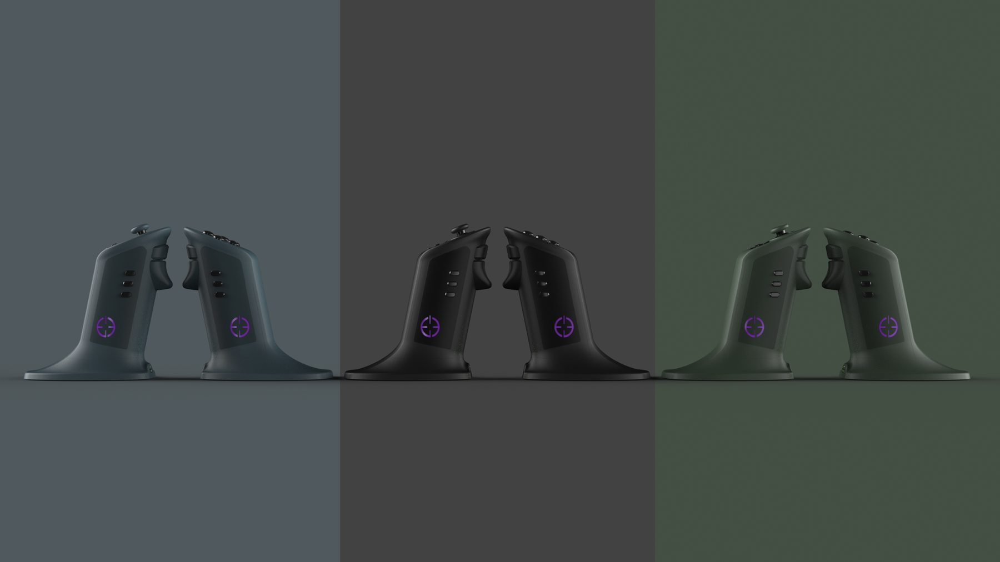
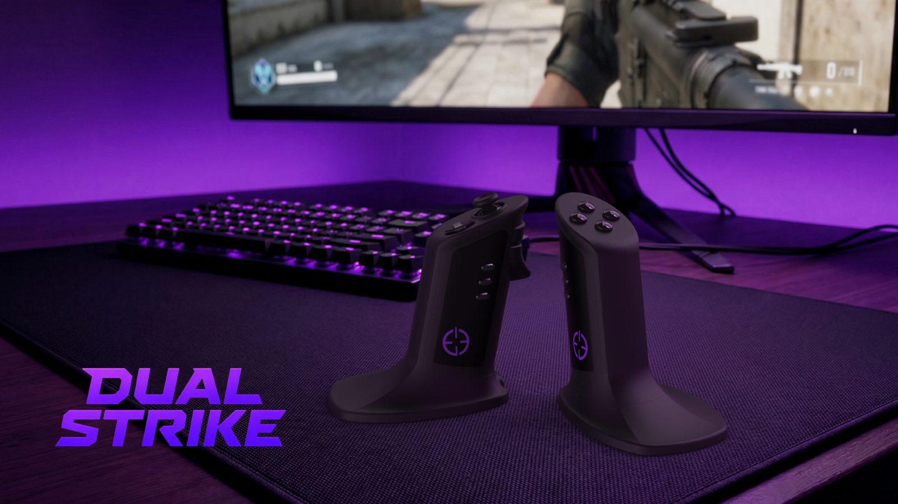

Analogue Joystick
Smooth, multi-directional movement under your left thumb — driving on-screen movement and look with the precision you'd expect from a flagship controller.
Dual Strike is a split-shell gaming controller-mouse that ends the trade-off between competitive precision and the comfort of a familiar grip — a single device built for both hands.
For years, players have been forced to choose: the precision and rapid aiming of a mouse, or the comfort and familiarity of a controller. Dual Strike ends that compromise. Two ergonomically-shaped shells — one for each hand — combine high-resolution mouse tracking with analogue thumb-stick navigation, programmable buttons, modular triggers and a familiar ABXY layout.

Each shell is built around a one-handed grip — every button, stick and trigger sits within natural reach, so the device disappears into the way you already play.
Smooth, multi-directional movement under your left thumb — driving on-screen movement and look with the precision you'd expect from a flagship controller.
A familiar four-way D-Pad on the left shell handles menus, weapon swaps and quick-fire navigation — right where your thumb already lives.
The right shell carries a familiar ABXY button layout, ready for jumps, reloads and abilities under your right thumb without taking your hand off the device.
A high-resolution optical sensor sits beneath the right shell, tracking movement across your desk for the kind of fine aiming a thumbstick simply can't deliver.
Three programmable buttons on the inside of each shell — bind them to anything from melee to push-to-talk for a layout that's truly yours.
A bumper and an analogue trigger sit along the upper edge of each shell — variable input under your index or middle finger for nuanced shooting and acceleration.
USB-C on each shell powers the internal battery and supports wired play — wireless when you want it, plugged in when you need it.
Each shell transmits independently, with a paired receiver combining both signals into one input device — no proprietary drivers, no perceptible latency.
Every input sits within reach of a single, natural grip — no awkward stretches, no compromised reach. Pick up a shell and start playing.
A weighted base, a sculpted thumb crown, and a recessed trigger well. Each shell stands ready on the desk and tracks the moment you pick it up.






Each shell carries its own micro-controller, battery, and wireless transmitter. Their signals are combined by a paired receiver and presented to the host PC or console as a single input device — so it behaves as one to your operating system, while feeling like two natural extensions of your hands.

Dual Strike is for the controller player who envies a streamer's flick shot, and the mouse player who has always wished they could lean back. It's for everyone in between. We're finalising the prototype now and preparing for crowdfunding — early supporters will help shape the first production run.
We're a small team finalising the Dual Strike prototype ahead of a crowdfunding campaign. If you're a player, retailer, investor, journalist or potential partner — we'd love to hear from you.
enquiries@aimaura.co.ukWe respond to every message personally.